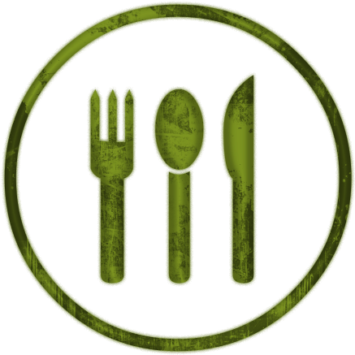

About
Food is a big part of one culture. It can be used to get to know one's believes and identity. We want to build a website that has a flavor of culture, to help people discover cultures through food and drinks.
